JUnit：断言与测试生命周期
单元测试
介绍
**测试：**是一种用来促进鉴定软件的正确性、完整性、安全性和质量的过程。
**阶段划分：**单元测试、集成测试、系统测试、验收测试。
1). 单元测试
- 介绍：对软件的基本组成单位进行测试，最小测试单位。
- 目的：检验软件基本组成单位的正确性。
- 测试人员：开发人员
2). 集成测试
- 介绍：将已分别通过测试的单元，按设计要求组合成系统或子系统，再进行的测试。
- 目的：检查单元之间的协作是否正确。
- 测试人员：开发人员
3). 系统测试
- 介绍：对已经集成好的软件系统进行彻底的测试。
- 目的：验证软件系统的正确性、性能是否满足指定的要求。
- 测试人员：测试人员
4). 验收测试
- 介绍：交付测试，是针对用户需求、业务流程进行的正式的测试。
- 目的：验证软件系统是否满足验收标准。
- 测试人员：客户/需求方
**测试方法：**白盒测试、黑盒测试 及 灰盒测试。
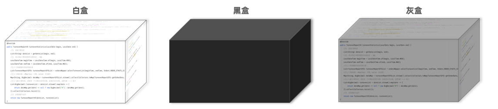
1). 白盒测试
清楚软件内部结构、代码逻辑。
用于验证代码、逻辑正确性。
2). 黑盒测试
不清楚软件内部结构、代码逻辑。
用于验证软件的功能、兼容性、验收测试等方面。
3). 灰盒测试
结合了白盒测试和黑盒测试的特点，既关注软件的内部结构又考虑外部表现（功能）。
Junit入门( 第三方引入专业的测试框架 )
单元测试
- 单元测试：就是针对最小的功能单元(方法)，编写测试代码对其正确性进行测试。
- JUnit：最流行的Java测试框架之一，提供了一些功能，方便程序进行单元测试（第三方公司提供）。
在之前的课程中，我们进行程序的测试 ，都是main方法中进行测试 。如下图所示：
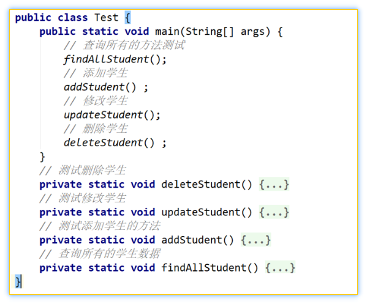
通过main方法是可以进行测试的，可以测试程序是否正常运行。但是main方法进行测试时，会存在如下问题：
- 测试代码与源代码未分开，难维护。
- 一个方法测试失败，影响后面方法。
- 无法自动化测试，得到测试报告。
而如果我们使用了JUnit单元测试框架进行测试，将会有以下优势：
- 测试代码与源代码分开，便于维护。
- 可根据需要进行自动化测试。(前面失败后面继续测试)
- 可自动分析测试结果，并且自动产出测试报告[ 可导出 ]。
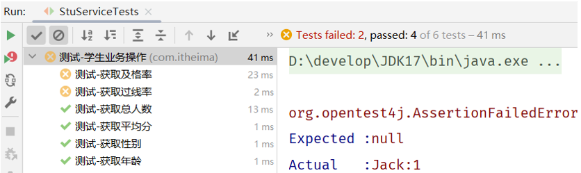
入门程序
需求：使用JUnit，对UserService中的业务方法进行单元测试，测试其正确性。
- 在
pom.xml中，引入JUnit的依赖。
<!--Junit单元测试依赖-->
<dependency>
<groupId>org.junit.jupiter</groupId>
<artifactId>junit-jupiter</artifactId>
<version>5.9.1</version>
<scope>test</scope>
</dependency>
- 在test/java目录下，创建测试类，并编写对应的测试方法，并在方法上声明@Test注解。
@Test
public void testGetAge(){
Integer age = new UserService().getAge("110002200505091218");
System.out.println(age);
}
- 运行单元测试 (测试通过：绿色；测试失败：红色)。
- 测试通过显示绿色
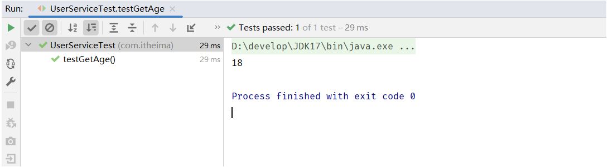
- 测试失败显示红色
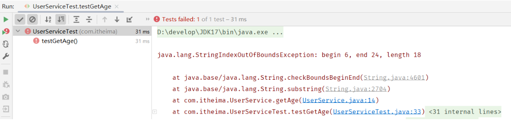
注意：
- 测试类的命名规范为：XxxxTest
- 测试方法的命名规定为：public void xxx(){...}
断言 ( 可以正常测试输出 , 但需要看测试出的效果是否正确 )
JUnit提供了一些辅助方法，用来帮我们确定被测试的方法是否按照预期的效果正常工作，这种方式称为断言。
以下学习的所有断言方法 都是基于 Assertions 工具类 中的方法 来实现的 ;
断言方法 | 描述 |
assertEquals(Object exp(自己期望输出的结果), Object act, String msg) | 检查两个值是否相等，不相 等就报错。 |
assertNotEquals(Object unexp, Object act, String msg) | 检查两个值是否不相等，相等就报错。 |
assertNull(Object act, String msg) | 检查对象是否为null，不为null，就报错。 |
assertNotNull(Object act, String msg) | 检查对象是否不为null，为null，就报错。 |
assertTrue(boolean condition, String msg) | 检查条件是否为true，不为true，就报错。 |
assertFalse(boolean condition, String msg) | 检查条件是否为false，不为false，就报错。 |
assertSame(Object exp( 预期抛出的异常 ), Object act, String msg ) | 检查两个对象引用是否相等，不相等，就报错。 |
示例演示：
package com.itheima;
import org.junit.jupiter.api.*;
import org.junit.jupiter.params.ParameterizedTest;
import org.junit.jupiter.params.provider.ValueSource;
public class UserServiceTest {
//断言也是使用第三方的工具类来实现的 ;
@Test
public void testGetAge2(){
Integer age = new UserService().getAge("110002200505091218");
Assertions.assertEquals(18, age, "两个值相等"); 提示信息会在控制台输出 ;
// String s1 = new String("Hello");
// String s2 = "Hello";
// Assertions.assertSame(s1, s2, "不是同一个对象引用");
}
@Test
public void testGetGender2(){
String gender = new UserService().getGender("612429198904201611");
Assertions.assertEquals("男", gender);
}
@Test
public void testGenderWithAssert2(){
UserService userService = new UserService() ;
Assertions.assertThrows(IllegalArgumentException.class, /此处由于函数式接口中只有exectue可以直接使用lambda方法定义/)
}
}
测试结果输出：
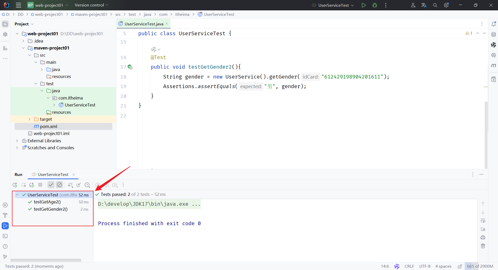
常见注解
在JUnit中还提供了一些注解，还增强其功能，常见的注解有以下几个：
注解 | 说明 | 备注 |
@Test | 测试类中的方法用它修饰才能成为测试方法，才能启动执行 | 单元测试 |
@BeforeEach( 用于资源准备 ) | 用来修饰一个实例方法，该方法会在每一个测试方法执行之前执行一次。 | 初始化资源(准备工作) |
@AfterEach( 资源释放, 环境清除 ) | 用来修饰一个实例方法，该方法会在每一个测试方法执行之后执行一次。 | 释放资源(清理工作) |
@BeforeAll( 用于资源的准备 ) | 用来修饰一个静态方法，该方法会在所有测试方法之前只执行一次。 | 初始化资源(准备工作) |
@AfterAll( 资源释放, 环境清除 ) | 用来修饰一个静态方法，该方法会在所有测试方法之后只执行一次。 | 释放资源(清理工作) |
@ParameterizedTest(需要传入参数集) | 参数化测试的注解 (可以让单个测试运行多次，每次运行时仅参数不同) 注解下创建的方法 需要传入参数集 , public void Test名字 (String it) ; | 用了该注解，就不需要@Test注解了 |
@ValueSource(内部放入测试所需数据类型的参数集) | 参数化测试的参数来源，赋予测试方法参数 . 例如 @ValueSource(strings[] = {"" , "" , "" }) ; | 与参数化测试注解配合使用 |
@DisplayName(编写要放置在 Test注解下方 ) | 指定测试类、测试方法显示的名称 （默认为类名、方法名） |
演示 @BeforeEach，@AfterEach，@BeforeAll，@AfterAll 注解：
public class UserServiceTest {
@BeforeEach
public void testBefore(){
System.out.println("before...");
}
@AfterEach
public void testAfter(){
System.out.println("after...");
}
@BeforeAll //该方法必须被static修饰
public static void testBeforeAll(){
System.out.println("before all ...");
}
@AfterAll //该方法必须被static修饰
public static void testAfterAll(){
System.out.println("after all...");
}
@Test
public void testGetAge(){
Integer age = new UserService().getAge("110002200505091218");
System.out.println(age);
}
@Test
public void testGetGender(){
String gender = new UserService().getGender("612429198904201611");
System.out.println(gender);
}
}
输出结果如下：
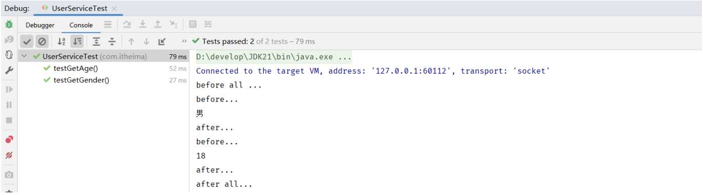
演示 @ParameterizedTest ，@ValueSource ，@DisplayName 注解：参数化测试 ;
package com.itheima;
import org.junit.jupiter.api.*;
import org.junit.jupiter.params.ParameterizedTest;
import org.junit.jupiter.params.provider.ValueSource;
@DisplayName("测试-学生业务操作")
public class UserServiceTest {
@DisplayName("测试-获取年龄")
@Test
public void testGetAge(){
Integer age = new UserService().getAge("110002200505091218");
System.out.println(age);
}
@DisplayName("测试-获取性别")
@Test
public void testGetGender(){
String gender = new UserService().getGender("612429198904201611");
System.out.println(gender);
}
@DisplayName("测试-获取性别3")
@ParameterizedTest
@ValueSource(strings = {"612429198904201611","612429198904201631","612429198904201626"})
public void testGetGender3(String idcard){
String gender = new UserService().getGender(idcard);
System.out.println(gender);
}
}
输出结果如下：
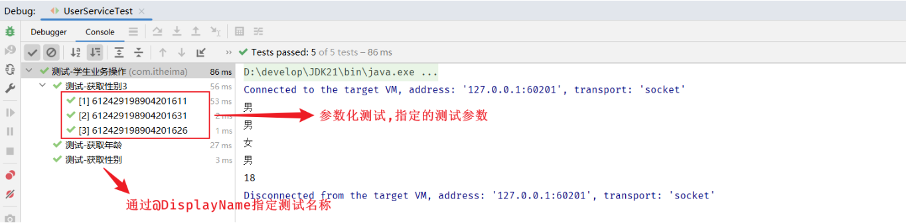
思考: 在maven项目中，test目录存放单元测试的代码，是否可以在main目录中编写单元测试呢 ？ 可以，但是不规范
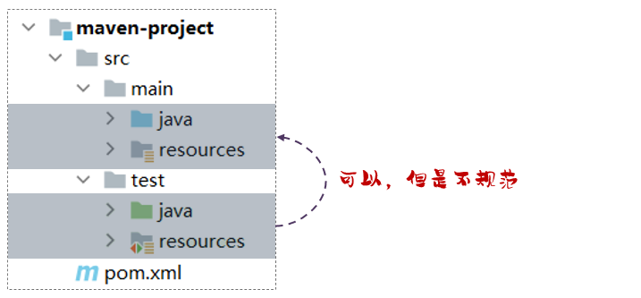
依赖范围
依赖的jar包，默认情况下，可以在任何地方使用，在main目录下，可以使用；在test目录下，也可以使用。
在maven中，如果希望限制依赖的使用范围，可以通过 <scope>…</scope> 设置其作用范围。
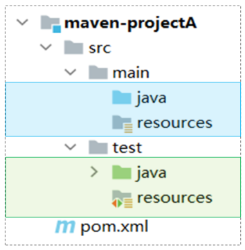
作用范围：
- 主程序范围有效。（main文件夹范围内）
- 测试程序范围有效。（test文件夹范围内）
- 是否参与打包运行。（package指令范围内）
可以在pom.xml中配置 <scope></scope> 属性来控制依赖范围。
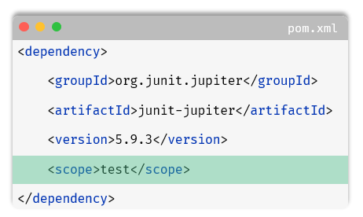
如果对Junit单元测试的依赖，设置了scope为 test，就代表，该依赖，只是在测试程序中可以使用，在主程序中是无法使用的。所以我们会看到如下现象：
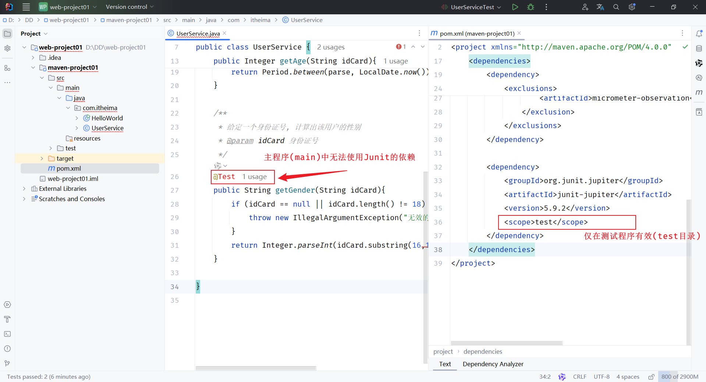
如上图所示，给junit依赖通过scope标签指定依赖的作用范围。 那么这个依赖就只能作用在测试环境，其他环境下不能使用。
scope的取值常见的如下：
scope值 | 主程序 | 测试程序 | 打包（运行） | 范例 |
compile（默认） | Y | Y | Y | log4j |
test | - | Y | - | junit |
provided | Y | Y | - | servlet-api |
runtime | - | Y | Y | jdbc驱动 |
Maven常见问题
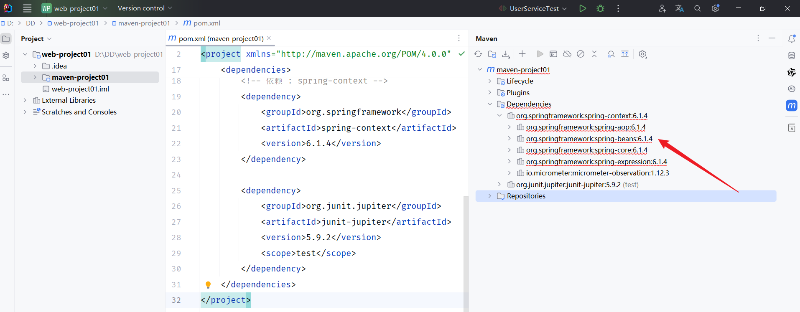
- **问题现象：**Maven项目中添加的依赖，未正确下载，造成右侧Maven面板中的依赖报红，再次reload重新加载也不会再下载。
- 产生原因：由于网络原因，依赖没有下载完整导致的，在maven仓库中生成了xxx.lastUpdated文件，该文件不删除，不会再重新下载。

解决方案：
- 根据maven依赖的坐标，找到仓库中对应的 xxx.lastUpdated 文件，删除，删除之后重新加载项目即可。
- 通过命令 (del /s *.lastUpdated) 批量递归删除 指定目录下的 xxx.lastUpdated 文件，删除之后重新加载项目即可。
- 可以直接就这条命令创建一个 .bat脚本 实现自动化操作 ;
- 重新加载依赖，依赖下载了之后，maven面板可能还会报红，此时可以关闭IDEA，重新打开IDEA加载此项目即可。
为了使大家能够方便的解决这个问题，大家可以将资料中提供的 del.bat 批处理脚本，拷贝到maven的安装目录下。 双击这个文件，就可以递归删除该目录下所有的 xxx.lastUpdated 文件。 放置目录如下所示：
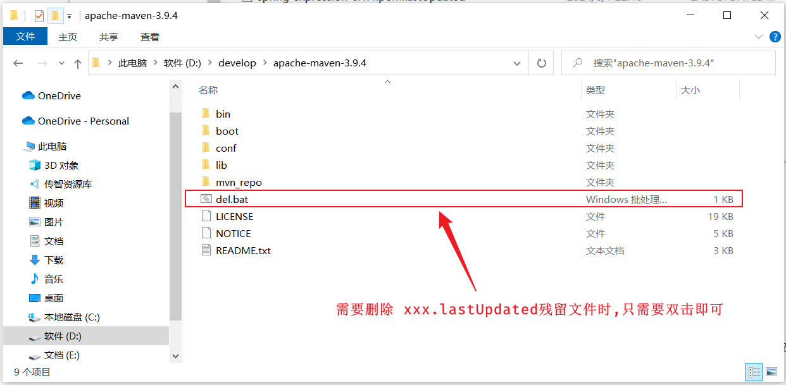
原理层面 :
JUnit : 内部并不知道 代码的内容 , 和创建的类型, 方法 ;
JUnit 就像一个"执行器"，它只负责找到并运行你标记的方法，至于方法里写了什么（创建什么对象、调用什么方法、断言什么结果），它完全不知道，也不需要知道
内部实现 :
开发者层面 : 创建测试类的对象 , 直接通过创建出的新对象实现需要测试的方法 ;
public class JUnitCore {
public static void main(String[] args) {
// 1. 获取测试类（通过命令行参数传入）
String testClassName = args[0]; // 例如 "com.example.UserServiceTest"
Class<?> testClass = Class.forName(testClassName);
// 2. 用反射找到所有 @Test 方法（不管方法名叫什么，不管里面写了什么）
for (Method method : testClass.getDeclaredMethods()) {
if (method.isAnnotationPresent(Test.class)) {
// 3. 执行这个方法（不管方法里做了什么）
Object instance = testClass.newInstance();
method.invoke(instance); // 这里只是"调用"，不知道调用了什么
}
}
}
}
Maven生命周期
生命周期中 , 在运行打包package的时候 , 会重复运行test 方法, 有上角提供了可以关闭test的方法 ;
可以直接跳过test 直接进行打包操作 ;
介绍
Maven的生命周期就是为了对所有的构建过程进行抽象和统一。 描述了一次项目构建，经历哪些阶段。
在Maven出现之前，项目构建的生命周期就已经存在，软件开发人员每天都在对项目进行清理，编译，测试及部署。虽然大家都在不停地做构建工作，但公司和公司间、项目和项目间，往往使用不同的方式做类似的工作。
Maven从大量项目和构建工具中学习和反思，然后总结了一套高度完美的，易扩展的项目构建生命周期。这个生命周期包含了项目的清理，初始化，编译，测试，打包，集成测试，验证，部署和站点生成等几乎所有构建步骤。
Maven对项目构建的生命周期划分为3套（相互独立）：
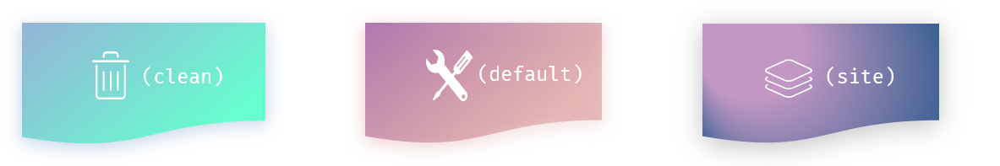
- clean：清理工作
- default：核心工作。如：编译、测试、打包、安装、部署等。
- site：生成报告、发布站点等。
三套生命周期又包含哪些具体的阶段呢, 我们来看下面这幅图:
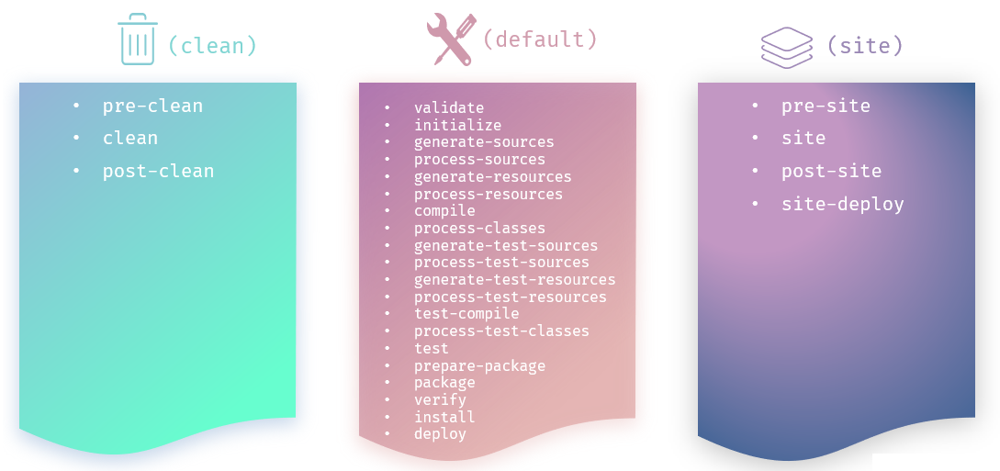
每套生命周期包含一些阶段（phase），阶段是有顺序的，后面的阶段依赖于前面的阶段。
我们看到这三套生命周期，里面有很多很多的阶段，这么多生命周期阶段，其实我们常用的并不多，主要关注以下几个：
- clean：移除上一次构建生成的文件 , 移除上次 产生的字节码文件 .class , 和 生成的jar包 。
- compile：编译项目源代码 , 编译 .java -> .class 字节码文件
- test：使用合适的单元测试框架运行测试(junit)
- package：将编译后的文件打包，如：jar、war等
- install：安装项目到本地仓库
Maven的生命周期是抽象的，这意味着生命周期本身不做任何实际工作。在Maven的设计中，实际任务（如源代码编译）都交由插件来完成。
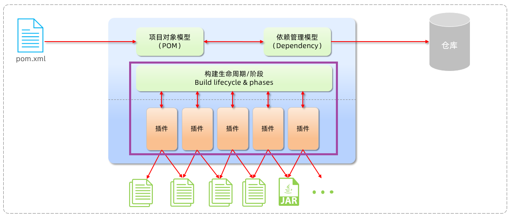
IDEA工具为了方便程序员使用maven生命周期，在右侧的maven工具栏中，已给出快速访问通道。
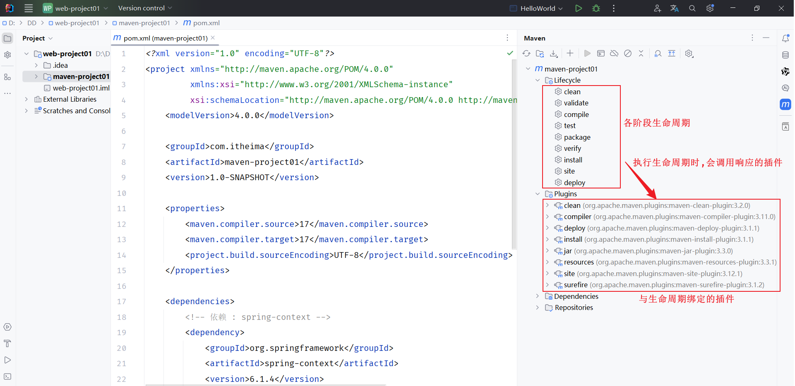
- 生命周期的顺序是：
clean-->validate-->compile-->test-->package-->verify-->install-->site-->deploy - 我们需要关注的就是：
clean-->compile-->test-->package-->install
说明：在同一套生命周期中，我们在执行后面的生命周期时，前面的生命周期都会执行。
**思考：**当运行package生命周期时，clean、compile生命周期会不会运行？
clean不会运行，compile会运行。 因为compile与package属于同一套生命周期，而clean与package不属于同一套生命周期。
执行
在日常开发中，当我们要执行指定的生命周期时，有两种执行方式：
- 在idea工具右侧的maven工具栏中，选择对应的生命周期，双击执行
- 在DOS命令行中，通过maven命令执行
方式一：在idea中执行生命周期
- 选择对应的生命周期，双击执行
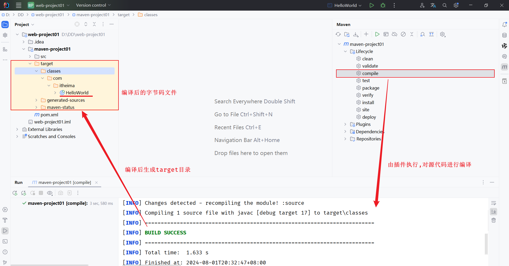
其他的生命周期都是类似的道理，双击运行即可。
方式二：在命令行中执行生命周期
- 打开maven项目对应的磁盘目录
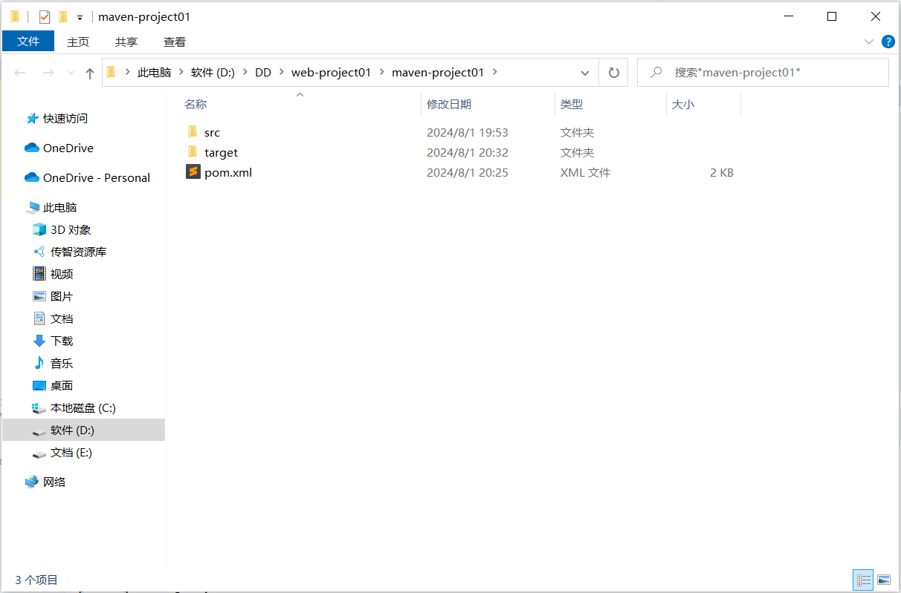
- 在当前目录下打开CMD
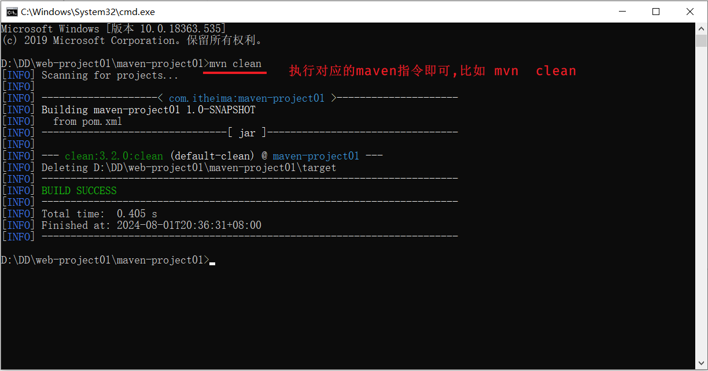
类似的道理，我们也可以在命令执行：
- mvn compile
- mvn test
- mvn package
- mvn install
都是使用 plugins中的对应插件实现相关功能的 : 底层的都是使用插件来实现 '
使用手册 :
创建一个有 main 的 Junit 类 :
内部实现 项目中的相关方法 :
方法内部 直接创建实现功能的类对象 . 调用的方法() ;
输出日志即可;